材料 4個分
※粉量を変えると自動計算されます
生地
作り方
生地
STEP 1
仕込み水を作る
水に砂糖とドライイーストを加え、よく混ぜ合わせます。今回は牛乳を使わず、水だけで仕込むことで、口当たりの軽いふわふわした生地に仕上げます。
水に砂糖とドライイーストを加え、よく混ぜ合わせます。今回は牛乳を使わず、水だけで仕込むことで、口当たりの軽いふわふわした生地に仕上げます。
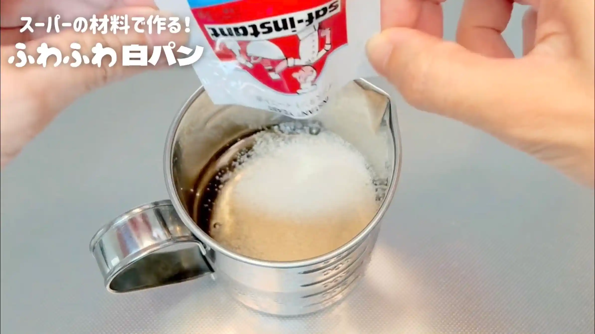
STEP 2
粉類を加えて、混ぜる
強力粉と塩をボウルに入れて混ぜ、仕込み水を加えます。ヘラで混ぜ、生地がひとまとまりになればOKです。ここでは生地をしっかり捏ねる必要はありません。
強力粉と塩をボウルに入れて混ぜ、仕込み水を加えます。ヘラで混ぜ、生地がひとまとまりになればOKです。ここでは生地をしっかり捏ねる必要はありません。
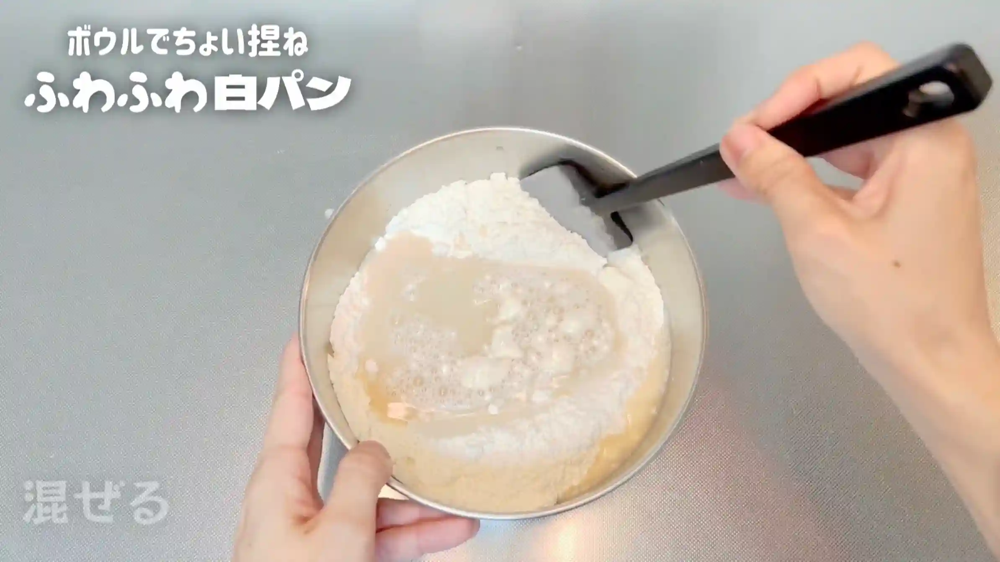
STEP 3
バターを2gほど残し、残りを生地に加えて混ぜる（[動画 02:58]）
バターを2gほど残しておき、残りを生地に加えます。バターが生地になじむまで、ヘラで混ぜ合わせます
バターを2gほど残しておき、残りを生地に加えます。バターが生地になじむまで、ヘラで混ぜ合わせます
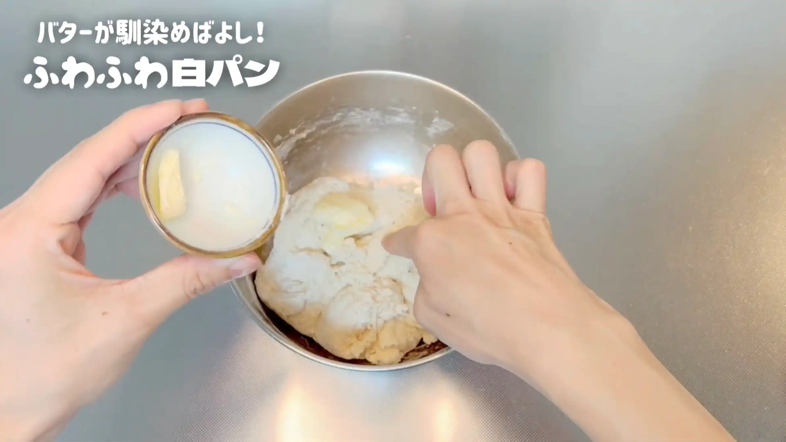
STEP 4
生地を手で捏ねる（[動画 03:51]）
手で4分ほど捏ね、全体の感触が均一になればOKです。ここでは生地をツルッとするまで捏ね上げる必要はなく、短時間の「ちょい捏ね」で仕上げます。
手で4分ほど捏ね、全体の感触が均一になればOKです。ここでは生地をツルッとするまで捏ね上げる必要はなく、短時間の「ちょい捏ね」で仕上げます。
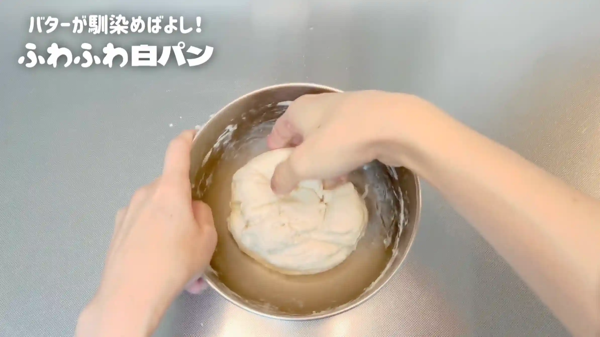
STEP 5
室温で15分おく
乾燥しないようにラップをして、生地を休ませます。ここでもまだ生地がツルッとしていなくても大丈夫です。
乾燥しないようにラップをして、生地を休ませます。ここでもまだ生地がツルッとしていなくても大丈夫です。
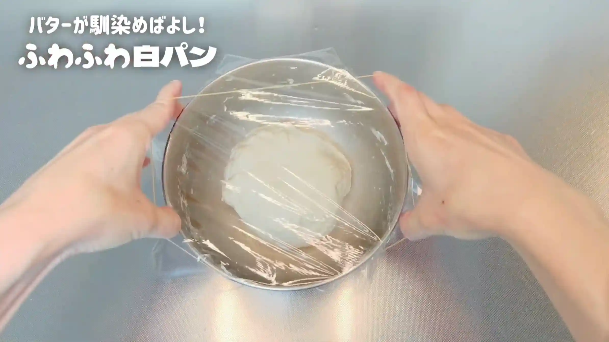
STEP 6
残りのバターを生地の表面に塗る
残しておいたバターを生地の表面に薄く塗ります。
残しておいたバターを生地の表面に薄く塗ります。
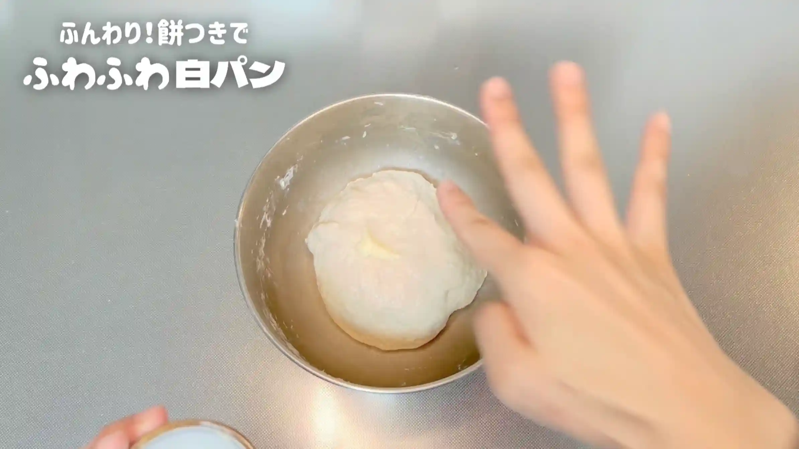
STEP 7
生地をボウルの中で叩く
バターを塗った生地をボウルの中で1分ほど叩きます。表面がツルッとしてきたらOKです。
バターを塗った生地をボウルの中で1分ほど叩きます。表面がツルッとしてきたらOKです。
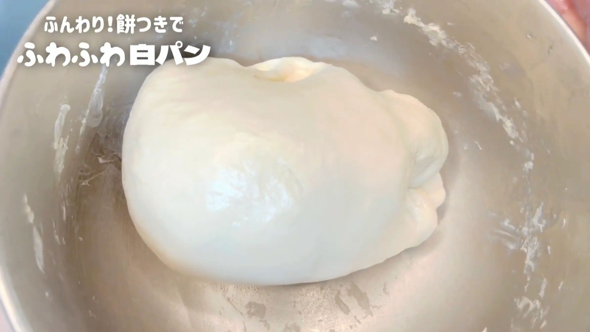
STEP 8
室温で90分おく
乾燥しないようにラップをして、一次発酵させます。時間は目安とし、生地が元の約2倍に膨らんだら次の工程へ進みます。ここでしっかり発酵させることで、短い捏ね時間でも生地が整ってきます。
乾燥しないようにラップをして、一次発酵させます。時間は目安とし、生地が元の約2倍に膨らんだら次の工程へ進みます。ここでしっかり発酵させることで、短い捏ね時間でも生地が整ってきます。
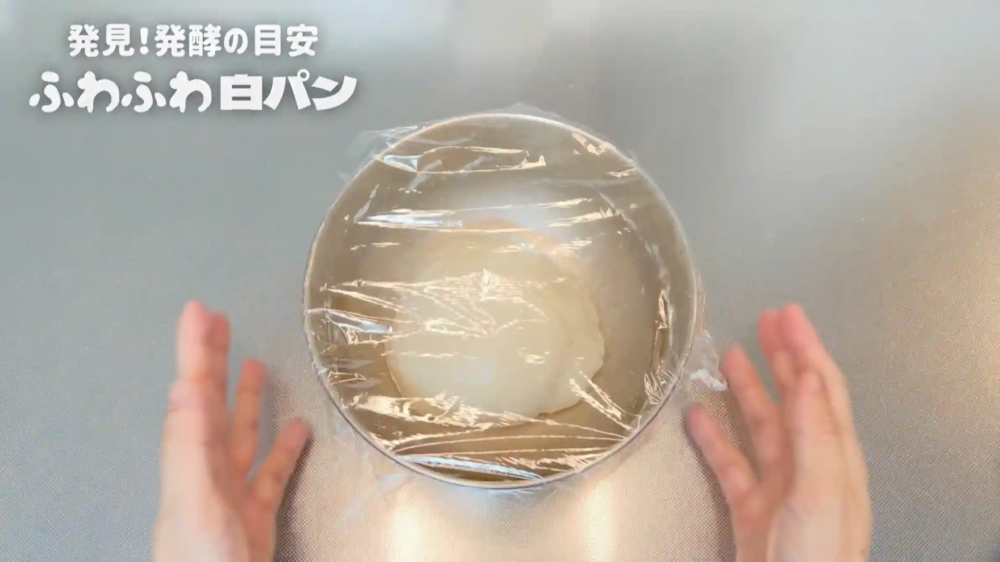
STEP 9
生地を取り出し、25分割する（[動画 09:43]）
作業台に生地を取り出し、25等分します。重さは約17〜18g/個になります。できるだけ大きさをそろえておくと、お花にしたときの花びらが均一に仕上がります。
作業台に生地を取り出し、25等分します。重さは約17〜18g/個になります。できるだけ大きさをそろえておくと、お花にしたときの花びらが均一に仕上がります。
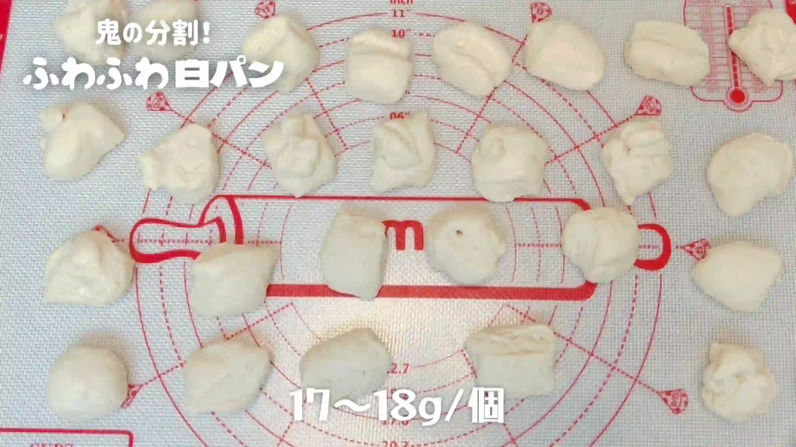
STEP 10
生地を丸めて、室温で10分おく
それぞれ表面がなめらかになるように丸め、乾燥しないようにラップをして10分ほど休ませます。生地を休ませることで、この後の成形がしやすくなります。
それぞれ表面がなめらかになるように丸め、乾燥しないようにラップをして10分ほど休ませます。生地を休ませることで、この後の成形がしやすくなります。
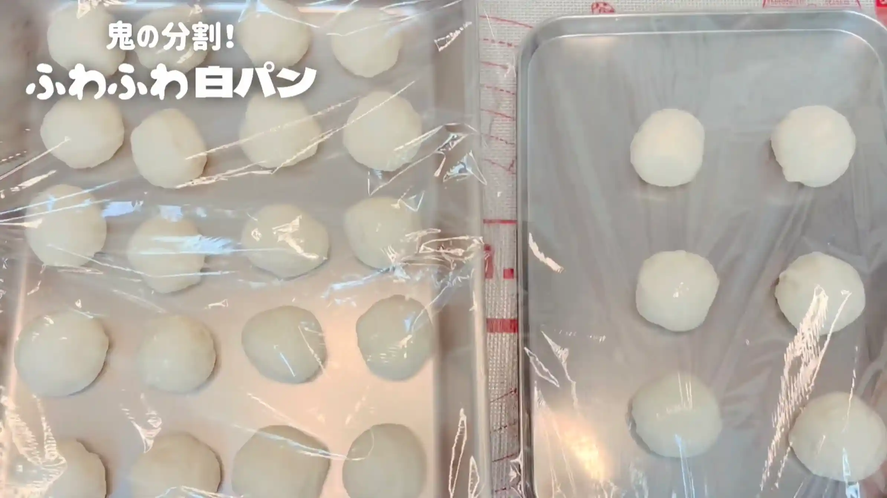
STEP 11
生地の1つを4等分して丸める
25個のうち1個を4等分し、それぞれ丸めます。この4個をお花の中心部分として使います。
25個のうち1個を4等分し、それぞれ丸めます。この4個をお花の中心部分として使います。
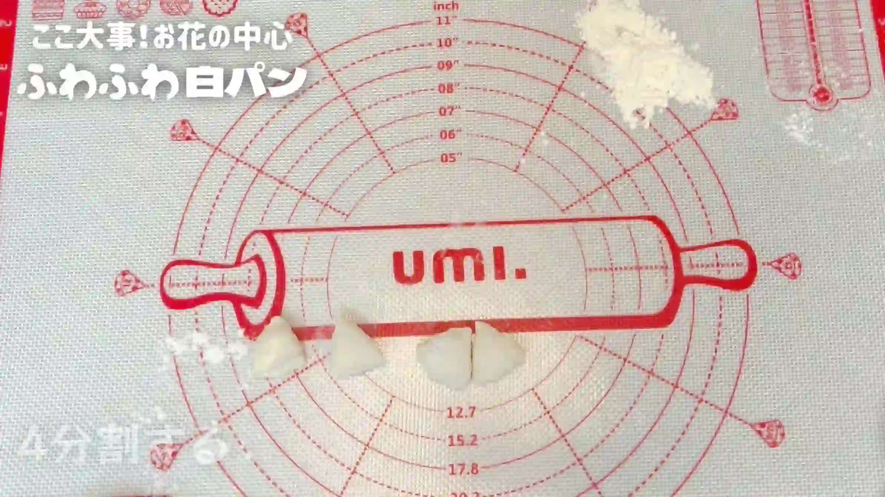
STEP 12
天板に4つの生地を置く
天板にオーブンシートを敷き、4つの生地を並べます。この4つを囲むように残りの生地を配置して、マーガレットの形を作ります。
天板にオーブンシートを敷き、4つの生地を並べます。この4つを囲むように残りの生地を配置して、マーガレットの形を作ります。
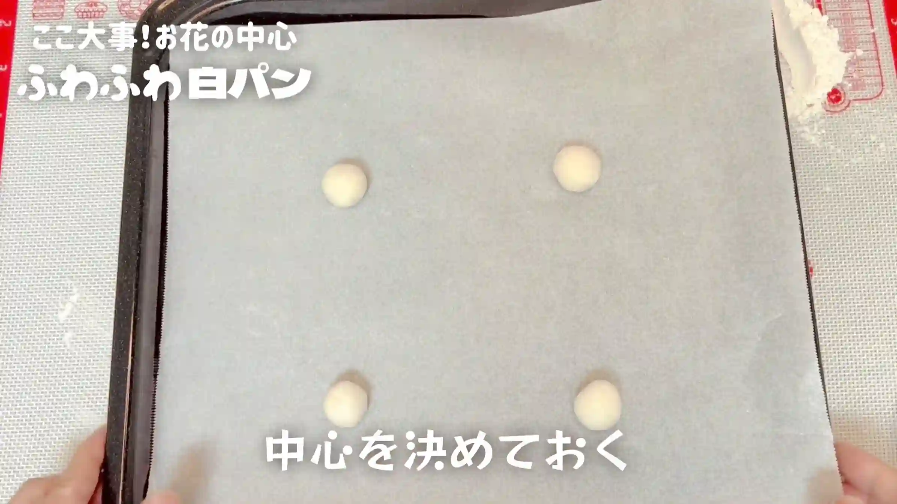
STEP 13
残りの生地を丸め直し、天板に並べる
残りの24個の生地を丸め直し、1つのお花につき6個ずつ、花びらの形に並べていきます。生地同士を近づけて並べると、発酵して膨らんだときに自然につながります。
残りの24個の生地を丸め直し、1つのお花につき6個ずつ、花びらの形に並べていきます。生地同士を近づけて並べると、発酵して膨らんだときに自然につながります。
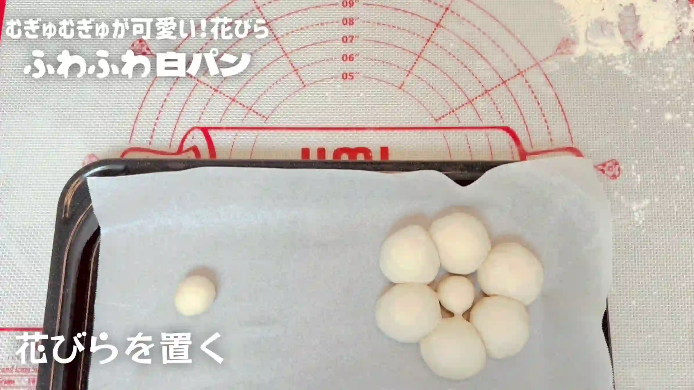
STEP 14
室温で30分おく
乾燥しないようにラップをして、成形した生地を二次発酵させます。30分を目安に、生地がふっくらとしてきたら次の工程へ進みます。
乾燥しないようにラップをして、成形した生地を二次発酵させます。30分を目安に、生地がふっくらとしてきたら次の工程へ進みます。
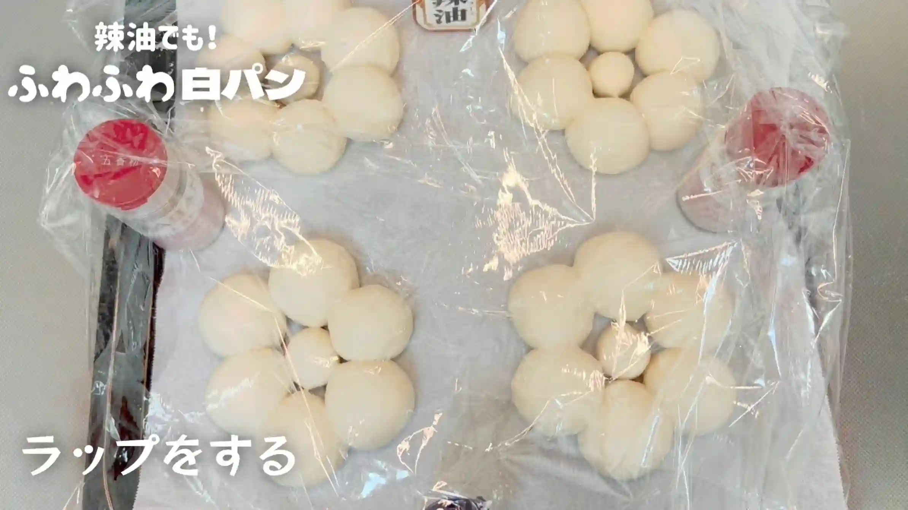
STEP 15
粉をふり、予熱なしのオーブン160℃〜180℃で23分焼く
焼成前に生地の表面へ粉を薄くふります。今回はオーブンを予熱せず、160℃〜180℃で焼き始めます。オーブンの温度がゆっくり上がることで、表面に焼き色がつきにくく、白パンらしい白さを残しながら中まで火を通します。焼き時間は目安とし、焼き色や生地の状態を確認しながら、ご家庭のオーブンに合わせて調整してください。
焼成前に生地の表面へ粉を薄くふります。今回はオーブンを予熱せず、160℃〜180℃で焼き始めます。オーブンの温度がゆっくり上がることで、表面に焼き色がつきにくく、白パンらしい白さを残しながら中まで火を通します。焼き時間は目安とし、焼き色や生地の状態を確認しながら、ご家庭のオーブンに合わせて調整してください。
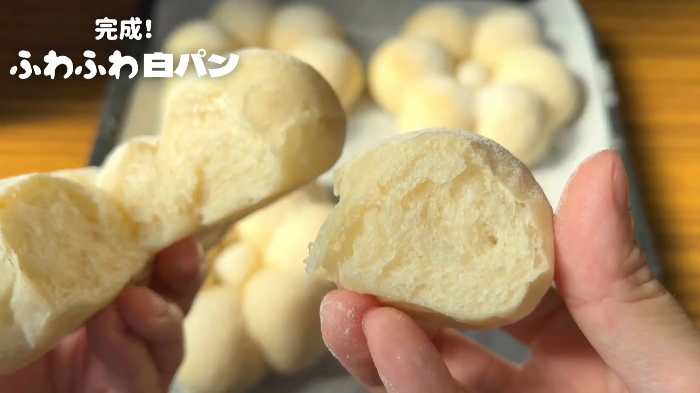
動画でチェック
おいしく作るためのワンポイントコラム
SNSで型を使わずに丸い生地を並べるだけの可愛いお花型パンを見かけ、「なるほど！」と思ってアレンジを加えた『ふわふわ白パン』を作ってみました！この形、「マーガレット」とも呼ばれていて本当に素敵ですよね。今回は、極上のふわふわ食感を引き出し、美しい白さに焼き上げるための「3つのコツ」をまとめました。
① 軽やかなふわふわ生地のコツ
「牛乳を入れるとふわふわになる」とよく言われますが、実際に検証してみると少し違う印象でした。実は牛乳に含まれるカルシウムやミネラルにはグルテンを引き締めて硬くする作用があり、「牛乳＝ふわふわ」の正体は柔らかさというより「生地のキメ細かさやしっとり感」だと私は思っています。そのため今回のレシピでは、牛乳を使わず『お水だけ』で仕込むのがポイント！生地を引き締めないことで、口当たりが軽やかでホロホロとした最高の『ふわふわ食感』を生み出すことができます。
② ちょい捏ねのコツ
ボウルの中で生地をひとまとめにしたら、バターを加えて「ちょい捏ね」をしていきます。生地全体が均一な柔らかさになるまで約4分ほど捏ねればOK！表面がツルッとするまで長時間捏ねる必要はありません。あとは一次発酵で元の2倍の大きさになるまでじっくり待つだけで、少ない捏ね時間でもグルテンが綺麗に繋がり、ハリのあるふんわり生地に育ってくれます。
③ 白さをキープする焼成のコツ
白パン特有のきれいな白さをキープするには、あえて予熱をせず、160℃〜180℃の低温でじっくり焼き上げるのが最大のコツです！温度が徐々に上がっていく過程で生地をじんわり膨らませ、表面に焼き色をつけずに中までしっかり火を通せます。卵液などは塗らず、お粉でふんわりお化粧をして焼き上げることで、素朴で愛らしい純白のパンに仕上がります。
これまでにないほど極上のふわふわ・ホロホロ食感！特別な型も不要で手軽にできるお花型の白パンを、ぜひおうちで試してみてください！
① 軽やかなふわふわ生地のコツ
「牛乳を入れるとふわふわになる」とよく言われますが、実際に検証してみると少し違う印象でした。実は牛乳に含まれるカルシウムやミネラルにはグルテンを引き締めて硬くする作用があり、「牛乳＝ふわふわ」の正体は柔らかさというより「生地のキメ細かさやしっとり感」だと私は思っています。そのため今回のレシピでは、牛乳を使わず『お水だけ』で仕込むのがポイント！生地を引き締めないことで、口当たりが軽やかでホロホロとした最高の『ふわふわ食感』を生み出すことができます。
② ちょい捏ねのコツ
ボウルの中で生地をひとまとめにしたら、バターを加えて「ちょい捏ね」をしていきます。生地全体が均一な柔らかさになるまで約4分ほど捏ねればOK！表面がツルッとするまで長時間捏ねる必要はありません。あとは一次発酵で元の2倍の大きさになるまでじっくり待つだけで、少ない捏ね時間でもグルテンが綺麗に繋がり、ハリのあるふんわり生地に育ってくれます。
③ 白さをキープする焼成のコツ
白パン特有のきれいな白さをキープするには、あえて予熱をせず、160℃〜180℃の低温でじっくり焼き上げるのが最大のコツです！温度が徐々に上がっていく過程で生地をじんわり膨らませ、表面に焼き色をつけずに中までしっかり火を通せます。卵液などは塗らず、お粉でふんわりお化粧をして焼き上げることで、素朴で愛らしい純白のパンに仕上がります。
これまでにないほど極上のふわふわ・ホロホロ食感！特別な型も不要で手軽にできるお花型の白パンを、ぜひおうちで試してみてください！


特別な型を使わず、天板の上でお花の形に並べて焼き上げる『ふわふわ白パン』のレシピです。おうちでも驚くほど柔らかな食感を引き出せます。コラムでは「軽やかなふわふわ生地のコツ」「ちょい捏ねのコツ」「白さをキープする焼成のコツ」の3つのポイントをご紹介します。